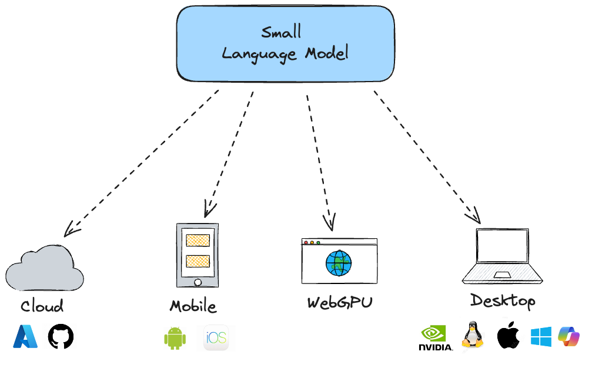
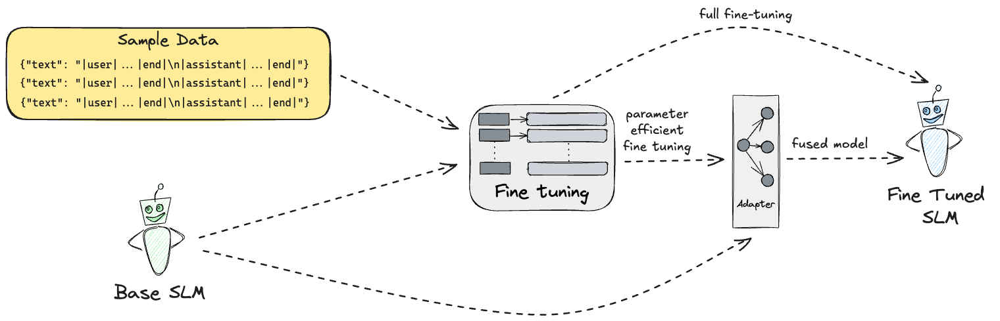

AI Language Models


Input is tokenized and mapped to a vector of token IDs.
There is really no formal definition of what an SLM actually is.
Typically we consider an SLM to be a language model with up to a few billion parameters.



Running SLMs
Consider the following classification problem.

SLM Customization
Fine tuning

- 🔧 SLMs may match the quality of LLMs for specific tasks
⚡ Fine-tuned SLMs maintain their efficiency advantage over larger models

Large models are trained with tool calling capabilities and are suitable for such AI orchestration or agentic AI flows. Small models can be fine tuned to imitate that.

<|system|>
You control a music player. You can use these functions:
- play_song(title): Play a specific song
- play_list(title): Play a specific playlist
- pause: Pause playback
- stop: Stop playback
- next: Skip to next track
- prev: Go to previous track
- vol_up: Increase volume
- vol_down: Decrease volume
- mute: Mute audio
- unmute: Unmute audio
You respond with a function call in the format: fn:function_name "parameter" (if needed and in lowercase) or say "Sorry I cannot help with that".
Examples:
"Play Bohemian Rhapsody" -> fn:play_song "bohemian rhapsody"
"Play workout mix" -> fn:play_list "workout mix"
"Skip this -> fn:next.
<|end|>
<|user|>
I don't like this song
<|end|>
<|assistant|>
<|user|>
I don't like this song
<|end|>
<|assistant|>